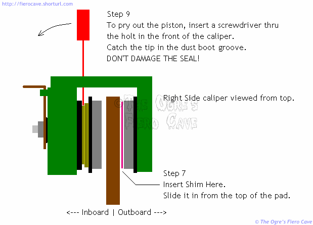

Go Home
Site Map
Go Home
Site Map
Manual Rear Brake Adjustment
Yes, Virginia, there is a procedure...
Let's face it... Even when the hand brake system is perfect, sometimes the rear calipers will refuse to adjust automatically, especially right after a brake job. GM knows about this and released an adjustment procedure in TSB 88-5-10 released 06/88. That procedure should work for systems with good hand brakes. (I wonder how many of those there are...) This is a modified procedure based on the GM TSB. (Note: When you print TSB, use "Shrink to Printable Area" in Page Scaling.) This version will work even if the hand brake cables are missing or damaged. It's also a one-man job this way.
This procedure will often help pedal height problems that show up after the rear brakes are worked on. For cars with good cables, it will also help hand brake problems.
Warning! Any manually adjustment methods are a sign to replace rear calipers now or very soon. Failing to self-adjust means the rear piston is binding or frozen. See Brake Recall Notes
Warning! Many "Rebuilt" calipers are bad right out of the box because many are using rebuild pistons. If they won't self-adjust then return them. Problem will only get worse.
Warning! The actuator arms and return springs must be installed on the calipers for proper operation. This applies even to cars where the cables have been removed.
Warning! This procedure will not work for seriously worn rotors or rotors with concentric grooves. It will not cure problems caused by bad wheel bearings. It will not cure problems with binding slide bolts.
Notes:
This procedure is to be used only after the system is fully bled!
All fluid bleeding and flushing must be complete before attempting this
adjustment. Bleeding should always be the first thing you check with a low
pedal problem.
This procedure has only been tested for 84-87 rear calipers and may
not work on 88.
This procedure will not solve low pedal caused by MC or Brake Booster
problems. It may reduce such a problem but you'll still have to fix the MC or booster.
I need the return springs? Even with no cables?
Yes! In addition to needing the arm to perform this adjustment, the arms and springs eliminate random movement of the actuator screw. Random movement of the arm/screw can bind the pads against the rotor.
Why won't it work on rotors with concentric (ring) grooves?
The grooves aren't the problem; it's the ridges on the pads, especially the outboard pad. The ridges will hold the rest of the pad off the shim or cock the caliper. In either case, you likely won't get an accurate adjustment. If you try it and have problems, oh well.
Tools
Large Curve Jaw Channel Lock Pliers or Vise Grips. These can better grip the return spring.
Custom Shim
Slotted Screwdriver, A slightly worn one with no sharp edges is best.
Shimmy, shimmy, shake...
Before you can do the procedure, you have to make a custom shim. The shim is required! If you attempt the adjustment without the shim you'll very likely end up with the pads dragging.
You will need a section of flat Aluminum sheet approximately 4x10 inches. The sheet must be .010 to .015 inch thick. Soda cans do not work. I made mine from some aluminum roof flashing.
The easiest way to make the shim is to trace the outside brake pad to the aluminum. Put the friction material against the metal and trace with a scribe.
Here's a scan of my shim. It's not pretty but it gets the job done. If you print it to scale then you could use it for a pattern to make the shim without pulling a pad off the car.
Cut along the inside of your tracing on the metal. You want the shim slightly smaller than the pad face. The shim must be narrow enough to sit flat on bare metal. Make sure the shim isn't sitting on rust along the inner or outer edges of the rotor surface. When you cut out the tracing, leave yourself a handle on one end of the shim. I made my handle about 3-4 inches long. (Use my shim as an example...)
Make sure you remove all sharp corners or burrs. The fingers you save may be your own...
Adjustment

- Jack the car and remove the rear wheels.
- Install 2 lug nuts on each rotor to hold them in place.
- Make sure both actuator arms are moving freely and that they can reach the stops on the caliper.
- If the cables are holding one or both arms off the stops then you must adjust or fix them. If you opt to remove the cables, DO NOT discard the springs!
- Disconnect the cable from the actuator arm and remove the spring.
- Use a screwdriver to pry the caliper toward you enough to get the shim in between the outer pad and the rotor. Be careful not to damage the rotor or pads with the screwdriver.
- Insert the shim between the outer pad and the rotor. It can be a little tricky to do this. If you absolutely can't get the shim in there then either the slides have bound or you don't have a clearance problem in the caliper. (On the other hand, if you can't get the shim in place then the brakes may be dragging... Get that figured out or you could ruin a rotor.)
- Use your large pliers to work the actuator arm 1 or 2 times as far as it will go and return it to the caliper stop. This should trap the shim firmly in place. (If not, try stepping on the brake pedal a couple times.)
- Carefully pry the piston toward the rotor and hold it there. DO NOT damage the dust boot!
- While holding the piston tight against the rotor, cycle the actuator arm several times with the pliers. After 2-3 swings of the arm it should only move about 1/2 an inch before it goes tight.
- Return the actuator arm to the caliper stop when finished.
- Put the spring back on the caliper and reconnect the cable. The spring is required even if you don't use the cables. It keeps the arms from moving due to caliper operation and vibration.
- Remove the shim. Be careful! The shim can be quite snug in there now. Make sure you have a good grip on it or you could get slashed.
- Repeat the procedure for the other caliper. Even if you only worked on one caliper the other is likely out of whack. Always adjust both sides to ensure even braking.
- Step on the brakes a few times and check for brake drag! Don't drive the car until you are sure they aren't dragging!
Be careful driving the next couple days. It can take a few trips before you get used to the increased pedal height again.
If this procedure doesn't work or the caliper opens up again after a few days then you've got other problems.
If the caliper doesn't hold adjustment, something is wrong at the affected wheel.
If the calipers are holding adjustment ok but you still have low pedal, you may have a problem with the Master Cylinder. A bad quick take up valve in the MC will cause low pedal. The power brake booster can also cause it but that usually happens only when a booster wasn't rebuilt right.